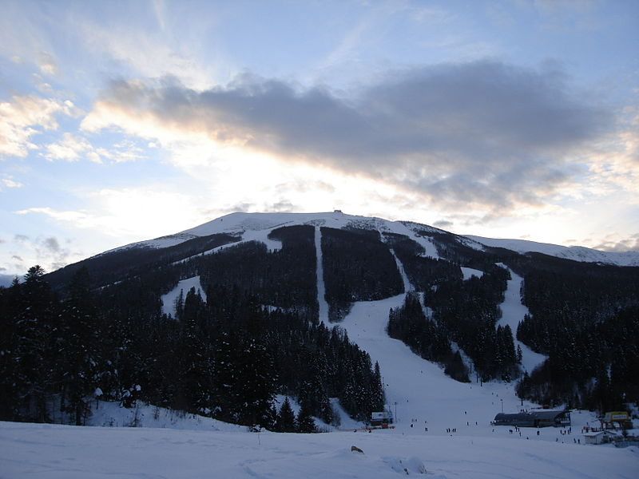

Dobro došli na portal o Bjelašnici
Najveći dio Bjelašnice građen je od srednjih i gornjih trijaskih krečnjaka i dolomita. Krečnjačko dolomitske mase ispucale su brojnim pukotinama, koje su predisponirale jake kraške procese, zbog kojih se padavine brzo gube u podzemlju, pa je planina skoro bezvodna. Za vrijeme diluvijalne glacijacije na Bjelašnici su bili glečeri (lednici), najajče razvijeni na njenoj sjevernoj strani. I danas ima trgova djelovanja tih glečera.
Prostorno se masiv Bjelašnice može podijeliti na tri dijela. Prvi je centralni masiv sa najvišim istoimenim vrhom (lokalni naziv Zvjezdarnica) (2067 m) na kojem se nalazi i meteorološka stanica izgrađena 1894, prva u Bosni i Hercegovini. To je i najviša stalno nastanjena tačka u Bosni i Hercegovini. Sa tog mjest počinjao je i start olimpijskog spusta. U neposrednoj blizini je vrh Vlahinja (2057 m). Na južnom dijelu je Krvavac (2061 m). Na zapadu je Hranisava (1964 m).
Najveći dio Bjelašnice građen je od srednjih i gornjih trijaskih krečnjaka i dolomita. Krečnjačko dolomitske mase ispucale su brojnim pukotinama, koje su predisponirale jake kraške procese, zbog kojih se padavine brzo gube u podzemlju, pa je planina skoro bezvodna. Za vrijeme diluvijalne glacijacije na Bjelašnici su bili glečeri (lednici), najajče razvijeni na njenoj sjevernoj strani. I danas ima trgova djelovanja tih glečera.